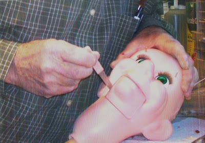

The mouth sticks!
6/3/2009
Question: Clinton, I happened to run across your website and I am thrilled that you are still active in the world of ventriloquism. I purchased your home course and two vent figures sometime in 1998-99. Due to work related demands, I stopped working with my figures, but have been asked to start up again. However, one of my figures has total lockjaw and the other one locks when I open his mouth too wide. Is there anything I can do to remedy this? Candle wax? Graphite? The figures were your large professional series made of a wood-like composite. Your advice will be most appreciated. Thanks. Best regards. Vic
* * * * * *
Vic: I only use clear silicone lubricant for areas such as you describe. It comes in an aerosol can with a long small diameter tube nozzle that allows you to apply the lubricant to a very specific area. Now, this may or may not solve the problems you describe. You could also insert a metal fingernail file into the slots alongside the mouth and "file" in and out at those areas where the mouth seems tight. (See photo below.) If all else fails, I'll be glad to fix the problems for you. Clinton
* * * * * *
Vic: I only use clear silicone lubricant for areas such as you describe. It comes in an aerosol can with a long small diameter tube nozzle that allows you to apply the lubricant to a very specific area. Now, this may or may not solve the problems you describe. You could also insert a metal fingernail file into the slots alongside the mouth and "file" in and out at those areas where the mouth seems tight. (See photo below.) If all else fails, I'll be glad to fix the problems for you. Clinton
